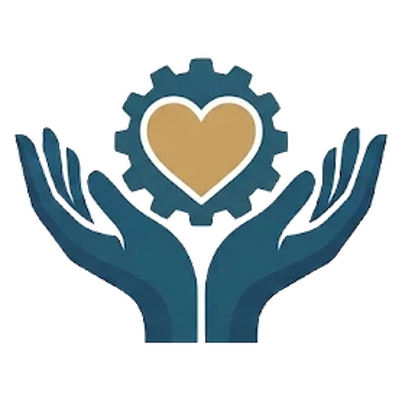

Automated Altruism
Neighbors helping neighbors, with software
Free software help for the people who help others
Automated Altruism is a volunteer project by Josh, an electrical and software engineer with more than 25 years of experience, and a Christian here in Woodsboro, Maryland. I build free software for groups that serve our neighbors: food pantries, churches, shelters, recovery programs, senior and disability services, volunteer fire companies, youth programs and others.
Why
I believe it's important to help our neighbors. You're already doing that far better than I know how to. What I do know is software, and I'd love to put it to work for you.
What kind of help
Anything where software would save you time or headaches, from a quick fix to a bigger system:
- a volunteer sign-up or shift schedule
- tracking pantry inventory, donations or distributions
- a website your own people can update, with events and sign-ups
- untangling a spreadsheet that's grown out of control
- a larger system that ties it together: intake, scheduling, reporting for grants
Bigger projects happen in stages. Each stage gives you something that works, and you tell me what should come next.
See it in action
Real tools, filled with made-up sample data. Click around: nothing you do is saved anywhere but your own browser.
Volunteer Shift Sign-Up Scheduler
Sign up for charity volunteer shifts for free, right from your phone, with no account needed, and see at a glance where help is still needed.
Try itFood Pantry Inventory Tracker
Track donations and distributions from a tablet, see stock and expiry at a glance, and export monthly numbers for grants without retyping.
Try itCheck-in tool for church events
Lets volunteers quickly check in returning and new guests at the door, even when Wi-Fi drops, and gives organizers simple headcounts and attendance records.
Try itHow it works
- Tell me the problem in your own words, by email. No technical knowledge needed.
- I might ask a few questions, so I build the right thing.
- I email you a version to try, made just for you. Nothing about your organization is posted online.
- You tell me what to change. We go back and forth until it fits.
- It's yours. Free, to keep and use however you like.
A few honest notes
- I build these tools with help from AI models run by outside companies that I don't fully control. Please don't send me personal information about the people you serve, or anything confidential. A general description of the problem is all I need.
- Whatever I build is yours to keep and use freely. I also share a general version openly, so other organizations can benefit, and I leave out anything specific to you.
- It's always free. I can't promise to take on everything, and I can't promise ongoing support.
Get in touch
Just email me about whatever is making your work harder: